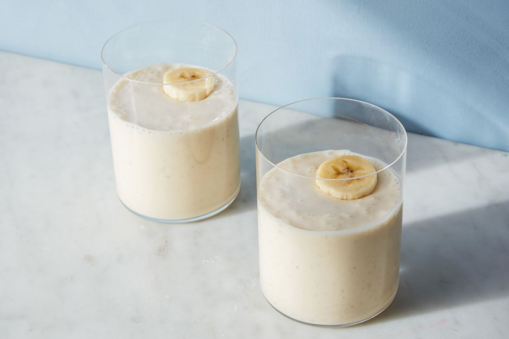

Homepage
Banana Smoothie

Healthy smoothies for weight gain are an
excellent calorie-gaining option for those
who want to gain weight. They're tasty, simple to prepare,
and a great source of vitamins, minerals, and good fats.
These delicious smoothie recipes, along with their advantages,
can help you gain weight:
Ingredients
- Greek yogurt - ½ cup
- Whole milk - 1 cup
- Peanut butter - 2 tablespoons
- Large banana - 1
- Honey (optional) - To taste
Steps
- Combine all ingredients in a blender and
blend on high speed until thick and smooth.
- It’s recommended to add the cocoa powder
gradually to prevent caking.
Nutrients
This is the best smoothie for weight gain
as it has high potassium, high protein, and healthy
fat content which promotes muscular growth and long-lasting
energy.